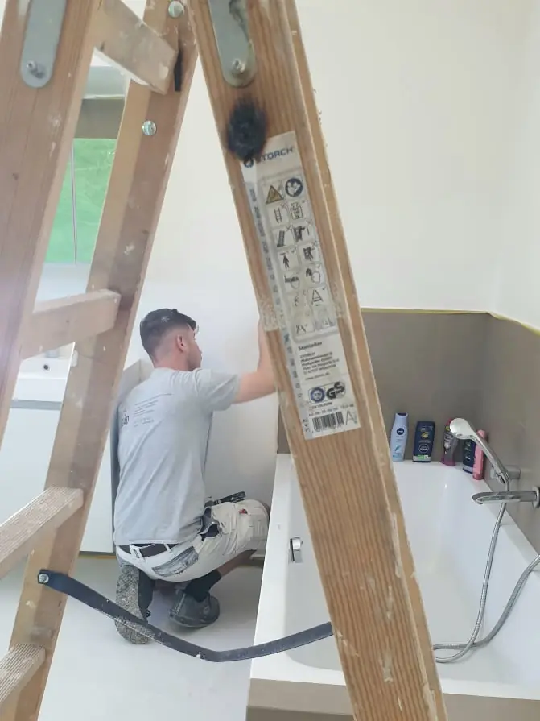

Een vochtige ruimte schilderen: enkele tips en tricks
Heel wat ruimtes staan onder invloed van water en vocht. Denk maar aan de de badkamer, kelder, garage, het tuinhuis, ... Daarom is het belangrijk om gebruik te maken van de juiste materialen, zodat nattigheid en damp geen enkele kans krijgen om de ruimtes te beschadigen. In deze blog lees je hoe je de jusite verfkeuze kan maken en geven we je tips om te starten met schilderen.


Maak de juiste verfkeuze
Het warme water dat je dagelijks door de douchekop laat stromen veroorzaakt heel wat damp in je badkamer. Misschien staat er een tuinhuis op je terras en dringt er water in het hout na een hevige regenbui? Wat je ook wil schilderen: kies de juiste verf! Een buitenmuur is immers anders dan een binnenmuur. Om je tuinhuis bijvoorbeeld te schilderen kies je best een dekkende verf of beits. Beits is immers een duurzame oplossing en beschermt tuinhout tegen alle weersomstandigheden. Ook in de badkamer moeten je muren goed bestand zijn tegen water, warmte en damp. Kies dus voor een verf die waterafstotend, goed reinigbaar en bestand is tegen schimmelontwikkeling!
Schilderen met acrylverf
Acrylverf is samengesteld uit pigment en wordt gemaakt op basis van water. Er bestaan verschillende varianten zoals satijnglans, hoogglans of mat. Zowel binnen als buiten kan je acrylverf gebruiken. Schilder bijvoorbeeld je tuinhuis met een licht kleur acrylverf en het krijgt meteen een heldere look. Bovendien is deze waterafstotend en kan de regen het hout niet binnendringen. Wist je dat er zelfs acrylverfsoorten bestaan die speciaal ontwikkeld zijn voor vochtige ruimtes?
Vochtbestendige kwaliteitsverf of muurverf met hoge zijdeglans
De verfkeuze bij het schilderen van je vochtige ruimtes hangt grotendeels af van de verluchting. Heb je in die omgevingen voldoende verluchting door bijvoorbeeld een raam die open kan? Dan is zelfs gewone muurverf geschikt.
Indien je niet makkelijk kan verluchten, dan gebruik je beter aangepaste verf, speciaal voor vochtige ruimtes. Ook een muurverf met hoge zijdeglans is geschikt. Beide verfsoorten stoten water en schimmels af en zijn dus toe te passen.
Tips om een vochtige ruimte te schilderen
Als je de juiste verf gekozen hebt, kan je starten met schilderen. Eerst en vooral moet je de ruimte grondig schoonmaken. Zorg dat er geen vuiltje meer te bespeuren is met een stofborstel op de muur en herstel oneffenheden met schuurpapier en plamuursel. Zo voorkom je een bultje op een wand nadat die geschilderd is.
Leg vervolgens een laag primer aan. Gebruik zeker een waterafstotende primer die geschikt is voor vochtige ruimtes of omgevingen. Daardoor hechten de grond-en de toplaag van de verf zich beter aan elkaar en zal de verf minder snel loskomen. Zodra de primer droog is, kan je beginnen aan het echte verfwerk. Ook een goede afwerking is belangrijk. Schilder je de muur naast de douche? Maak de douche dan watervast met silicone of met een kit die daar speciaal voor gemaakt is.
Een vochtige ruimte schilderen vraagt meer dan alleen de juiste kleur. De keuze van het verfsysteem, een correcte voorbereiding en aandacht voor ventilatie bepalen mee hoe duurzaam het resultaat zal zijn. Twijfelt u welke aanpak geschikt is voor uw badkamer, garage, kelder of andere vochtige ruimte? Tijdens een vrijblijvend plaatsbezoek bekijken we graag welke aanpak het meest geschikt is voor uw situatie. Ontdek meer over onze binnenschilderwerken
Lees ook

Gyproc schilderen, een stappenplan!
Gyproc-platen zijn snel en makkelijk te schilderen, maar er zijn toch enkele aandachtspunten. Hierbij een eenvoudig stappenplan.
Lees meer
Interieurtip: magnetische en schrijfondergronden
Geef je interieur een creatief tintje met een magnetische ondergrond, schoolbord en/of whiteboardverf. Een duurzame en…
Lees meer
Jarenlang genot dankzij de troeven van kwaliteitsverf
Je bent van plan om jouw woning op te knappen met een nieuw likje verf en koopt een pot verf in een doe-het-zelfzaak.…
Lees meerEen mooi resultaat begint met een goed gesprek.
Tijdens een vrijblijvend plaatsbezoek luisteren we naar uw wensen, geven we professioneel advies en bekijken we samen de mogelijkheden voor uw schilderwerken of interieurafwerking.